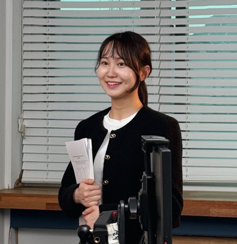

Aro Kim
Researcher in Computer Vision / Generative Models / Video Coding (VVC, ECM) / 3D Vision
I am a fourth-year student in the integrated M.S./Ph.D. program in Computer Science and Engineering at Kyungpook National University. My research interests include computer vision, generative models, video coding for machine vision, and 3D vision.
About
I am a fourth-year student in the integrated M.S./Ph.D. program in Computer Science and Engineering at Kyungpook National University. My research focuses on computer vision, generative models, video coding for machine vision tasks, and 3D vision. I am particularly interested in developing efficient and high-performance visual intelligence systems for real-world image and video understanding.
Research Strengths
- I quickly learn emerging technologies, adapt them to my research workflow, and apply them creatively to new computer vision and machine vision problems.
- I am highly committed to performance-driven research, with a strong focus on careful experimentation, iterative improvement, and achieving competitive results.
Education
Fourth-year student in the Integrated M.S./Ph.D. Program in Computer Science and Engineering
Advisor: Prof. Sang-hyo Park
Research Interests
- Computer Vision
- Generative Models
- Video Coding for Machine Vision
- VVC and ECM
- 3D Vision
- Image and Video Restoration
- Super-Resolution
Publications
FiDeSR: High-Fidelity and Detail-Preserving One-Step Diffusion Super-Resolution
Aro Kim, Myeongjin Jang, Chaewon Moon, Youngjin Shin, Jinwoo Jeong, Sang-hyo Park
CVPR 2026
A one-step diffusion super-resolution method designed to preserve high-fidelity details while maintaining efficient inference.
Deep Learning-Guided Video Compression for Machine Vision Tasks
Aro Kim, Seung-taek Woo, Minho Park, Dong-hwi Kim, Hanshin Lim, Soon-heung Jung, Sangwoon Kwak, Sang-hyo Park
EURASIP Journal on Image and Video Processing, 2024, Vol. 2024, No. 1, Article 32
This work proposes a video compression framework tailored to machine vision tasks. It applies encoders to video regions distinguished by machine vision to improve coding efficiency, achieving an average BD-rate gain of 5.91% and up to 19.51% BD-rate gain.
Pruning-Guided Feature Distillation for an Efficient Transformer-Based Pose Estimation Model
Dong-hwi Kim, Dong-hun Lee, Aro Kim, Jinwoo Jeong, Jong Taek Lee, Sungjei Kim, Sang-hyo Park
IET Computer Vision, 2024, Vol. 18, No. 6, pp. 745–758
This work proposes a pruning-guided feature distillation strategy for an efficient transformer-based 3D human pose estimation model. The approach reduces model size by 30% compared to the state of the art while maintaining high accuracy.
Projects
Work Authorization
Open to research and engineering opportunities in the U.S. and internationally.
Contact
Email: arokim37@gmail.com / arokim37@knu.ac.kr